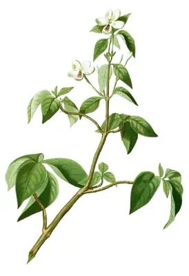

pranet · 出典付きの植物図鑑
尖尾鳳 ☠
Justicia gendarussa Burm.f. · Acanthaceae

Justicia gendarussa, commonly known as Willow-leaved justicia, Lapsulis in Creole Seychelles; is a small erect, branched shrub. According to Plants of the World Online it is native to the Indian subcontinent, Indochina, Peninsular Malaysia, Sumatra, the Philippines, and New Guinea, and has been introduced to Nepal, the western Himalayas, Pakistan, southern China including Hainan and Taiwan, eastern Africa, and the Mascarene Islands, Comoro Islands, and Seychelles. It has been described as rare and endemic to India, though those claims are at least confusing, in the context of statements that the plant is widely used in various forms for many of its medicinal and insecticidal properties, and that it is a quick-growing, evergreen forest shrub considered to be a native of China and distributed in Sri Lanka, India and Malaysia.
出典: Wikipedia 英語版「Justicia gendarussa」 · CC BY-SA 4.0
異名: Adhatoda subserrata Nees, Dianthera subserrata Blanco, Dicliptera rheedei Kostel., Ecbolium gendarussa (Burm.f.) Kuntze, Ecbolium subserratum Kuntze, Gendarussa vulgaris Nees, Justicia dahona Buch.-Ham. ex Wall., Justicia gandarussa L.f., Justicia salicina Vahl ex Nees
同定や利用は自己責任でお願いします。この図鑑だけを根拠に野生の植物を食べないでください。
出典
- 学名: World Flora Online Plant List 2026-06 · CC0 1.0
- 名前: Wikipedia の記事名と Wikidata · CC0 1.0（Wikidata）。記事名は事実
- 説明: Wikipedia 英語版「Justicia gendarussa」 · CC BY-SA 4.0
- 食用・毒性: World Checklist of Useful Plant Species (Diazgranados et al. 2020, RBG Kew) · CC BY 4.0
- 分布: World Checklist of Vascular Plants (WCVP), RBG Kew, version 2026-06-04 · CC BY 3.0
このページは pranet のデータから自動生成しています。コードは MIT、データは項目ごとのライセンス（説明）。